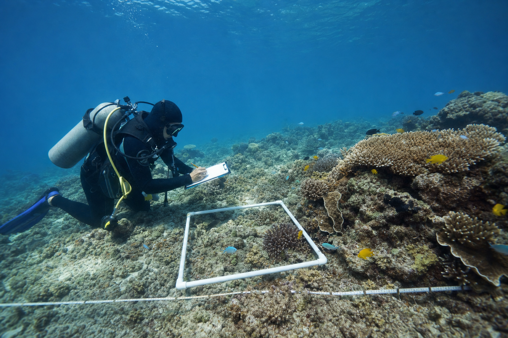

Lesson 14 - Year 3
Reef Evidence Detectives
Find the facts. Explain what they show. Persuade with evidence.
Look closely
Can both statements be true?

Today's mission
Use facts to make a strong reason
We are learning to find facts in a text and use them as evidence.
- Find a fact that matches my claim.
- Explain what the fact shows.
- Use two facts in a persuasive paragraph.
- Keep the evidence accurate.
Four words unlock the text
Say it. Show it. Explain it.
Evidence
A fact that helps prove an idea.
Bleaching
Coral turns pale or white when it is stressed.
Local action
Help in or near the Reef.
Climate action
Action that reduces the warming of Earth and the ocean.
Student Pack - page 1
Read like an evidence detective
First read: What is this article mostly about?
Second read: Which facts can help us persuade?
Match fact to claim
What did scientists find?

Cause and effect
Why can hot water harm coral?
Bleached coral is stressed. It may recover if the water cools.
Different jobs - shared purpose
The Reef needs two kinds of help
Help near the Reef
- cleaner water
- less rubbish
- careful Reef management
Reduce ocean warming
- reduce greenhouse gases
- reduce warming pressure
- protect recovery time
Evidence test
Can the article prove it?
Very warm water can bleach coral.
The Reef is the prettiest place in Australia.
Cleaner water can reduce pressure on the Reef.
Annotated model
Build one strong reason
We should protect the Great Barrier Reef.
Scientists found living coral, but coral cover had fallen.
This shows the Reef is alive and needs help.
Why does the evidence match the claim?
Add action evidence
Use because to connect ideas
Cleaner water and careful Reef management can reduce pressure on coral.
Climate action is also needed because local projects cannot cool the whole ocean.
What job does each kind of action do?
Student Pack - page 3
Plan the five moves
Make your claim.
Add a fact about the problem.
Explain what it shows.
Add a fact about action.
Finish with a clear request.
Independent writing
Write with evidence
- 5-6 connected sentences
- a clear claim
- two facts from the article
- “This shows ...” or “because ...”
- a clear call to action
Evidence partner check
Can your partner follow the proof?
Exit evidence
Prove one idea
because the article says .
This shows .